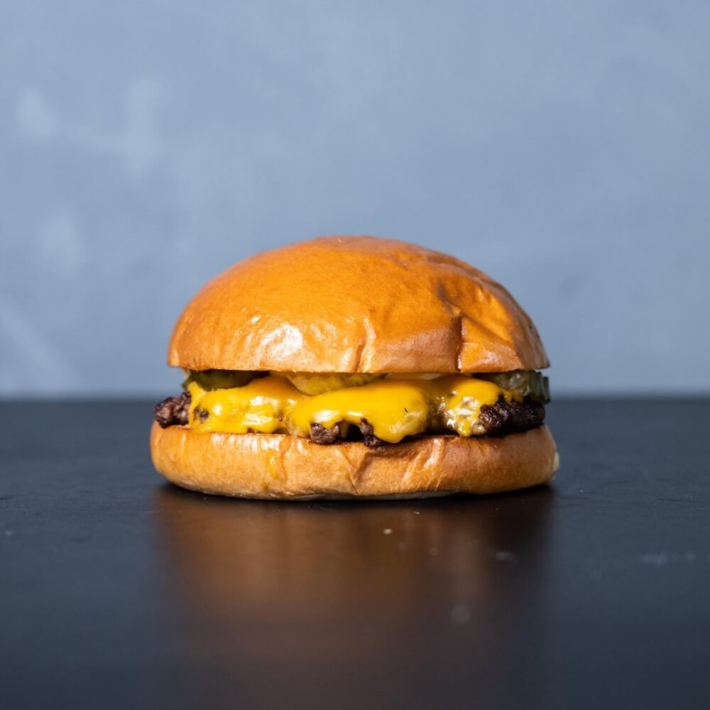

Burger

Not only am I grill-pilled, but I am also chill-pilled
with my delicios hamburgers - One can burger it up if one
desires:
Ingredients
Steps
- Make Patties.
- Heat up skillet or grill.
- Cook patty to desired done-ness. Cheese it.
- Let cool, and serve on a bun!
Home